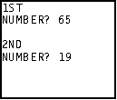
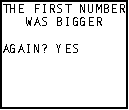
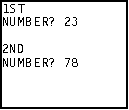
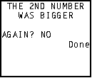

| HOME >> Tutorials >> Tutorial 6: Branching |
Introduction:
In this tutorial, we will learn how to use Lbl and Goto in a program. These two commands are very helpful because it allows the calculator to jump from one point in the program to another. Sometimes you do not want the program to run every part of your program. You may want to skip over a certain part of a program if a certain condition occurs.
New Commands:
| Lbl | Specifies the label to which the program can go to |
| Goto | Causes the program to go to the label |
| Stop | Ends program execution and returns to home screen |
The Code:
There's only going to be one set of code this time, but it's probably the longest code we've done so far. Lbl and Goto are used a lot with conditionals.
| : | For AShell, SOS, and TI-Explorer |
| Lbl 1 | |
| ClrHome | Clears the home screen |
| Disp "1ST " | Disp "1ST" |
| Input "NUMBER? ",A | Asks for 1st number and stores it into A |
| Disp "","2ND " | Displays a blank line and "2ND" |
| Input "NUMBER? ",B | Asks for 2nd number and stores it into B |
| ClrHome | Clears the home screen |
| If A>B:Goto 1A | If A is greater than B,go to Label 1A |
| If B>A:Goto 1B | If B is greater than A,go to Label 1B |
| Lbl 1A | |
| Disp "THE FIRST NUMBER" | Displays "THE FIRST NUMBER" |
| Disp " WAS BIGGER","" | Displays "WAS BIGGER" and a blank line |
| Goto 22 | Goto Label 22 |
| Lbl 1B | |
| Disp "THE 2ND NUMBER" | Displays "THE 2ND NUMBER" |
| Disp " WAS BIGGER","" | Displays "WAS BIGGER" and a blank line |
| Goto 22 | Goto Label 22 |
| Lbl 22 | |
| Input "AGAIN? ",Str1 | Asks if you would like to do this again |
| If Str1="YES":Then | If the answer is "yes", then |
| Goto 1 | Goto Label 1 |
| Else | If the answer is anything, but "yes", then |
| Goto JK | Goto Label JK |
| End | End the If-Then-Else statement |
| Lbl JK | |
| Stop | End the entire program |
 and 
OR
 and 
Further Explanation:
After the Else command, you have a choice. You could either just put Stop, or put Goto JK (which I did). I chose to put Goto JK, just to give you another Label construction to look at. I didn't show it up there, but you can also have a label with just one letter (Lbl A). The labels do not necessarily have to been in flowing order. You could rearrange it so that Lbl JK was at the top and it wouldn't make a difference. It's better to have the Lbl close to the Goto because the calculator does have to go far to find the Lbl. The farther the Lbl is from the Goto, the longer it takes for the calculator to find it, and the slower your program. It might not make a big difference in this, program, but when you have a lot of labels it could slow things up. Once again, we could use a different command instead of doing the If-Then-Else statement to ask if we want to run the program again. To check out the new command go to Tutorial 9.
Conclusion:
Lbl and Goto work in pairs; you can't have one without the other. If you get an error like ERR:LABEL, that means that the label in the Goto command is not defined with a Lbl command. You might have accidentally mistyped the label. Even if you are making a program that is not going to use branching, make it a habit of putting Lbl 1 at the beginning of your programs. Well we are half way through the Tutorials v1.0, and coming up next are For loops, which are used in counting.
If you do not understand a particular part in this lesson, have suggestions, or find any problems please contact me.
|
|
| Tutorial 5 | Tutorial 7 |